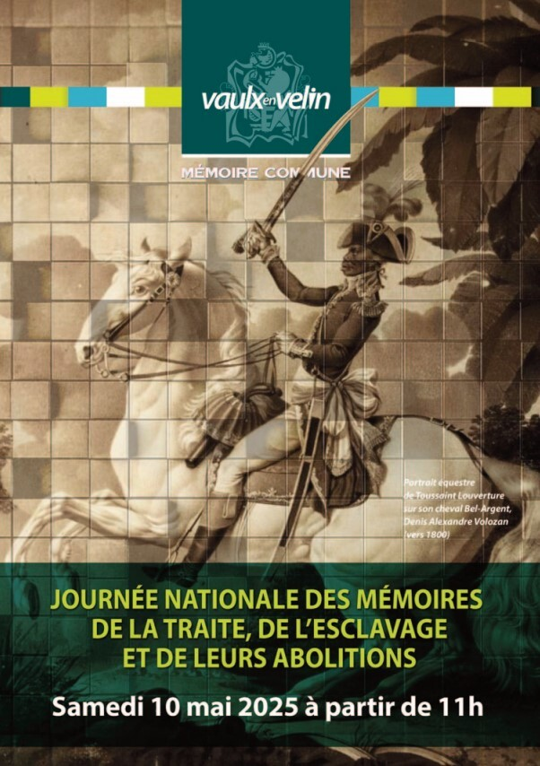
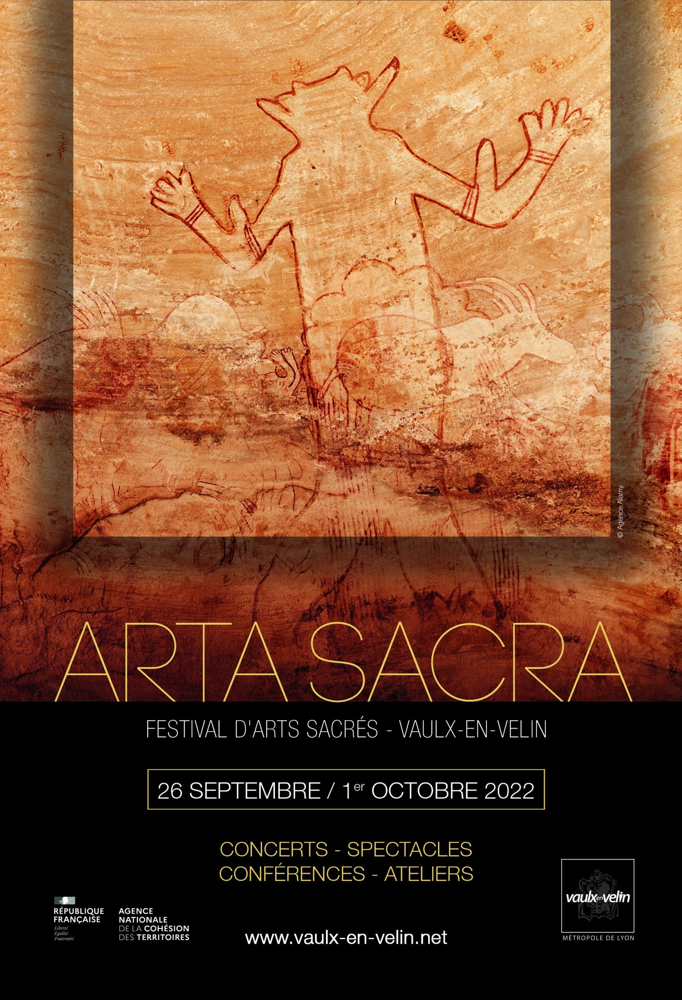
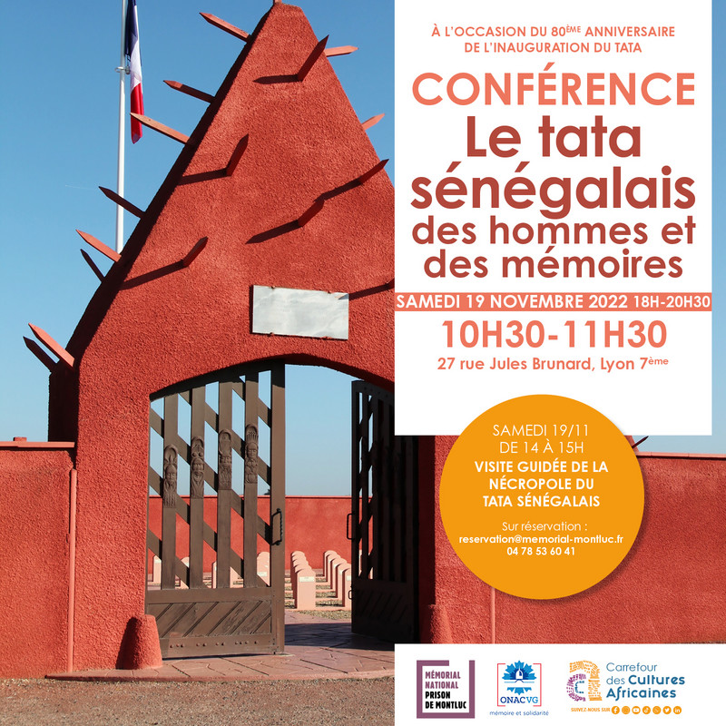

NosCollaborations
Partenariats, co-organisations et synergies : découvrez toutes les initiatives menées aux côtés d'autres acteurs culturels, associatifs et institutionnels depuis 2012.
Collaborations en 2025

ARTA SACRA 2025
Découvrez l'exposition Arta Sacra organisée à Vaulx-en-Velin en 2025 : un voyage à travers l'art sacré et les différentes expressions spirituelles du monde.

Journée Nationale des Mémoires de la traite, de l'esclavage et de leurs abolitions
Collaborations en 2024

Collaborations en 2022

ARTA SACRA 2022
Découvrez l'exposition Arta Sacra organisée à Vaulx-en-Velin en 2022 : un voyage à travers l'art sacré et les différentes expressions spirituelles du monde.

Visite Tata Sénégalais
Retour sur l'action Et si la justice m'était contée à Vaulx-en-Velin : une initiative pédagogique pour comprendre les enjeux de la justice et du droit.

Histoire singulière

Festival des solidarités internationales

Forum Associatif Tous Ensemble est une structure engagée pour le vivre-ensemble, la solidarité locale et le développement d'initiatives citoyennes.
Forum Associatif Tous Ensemble © 2023 – 2026. Tous droits réservés par l'équipe FATE.